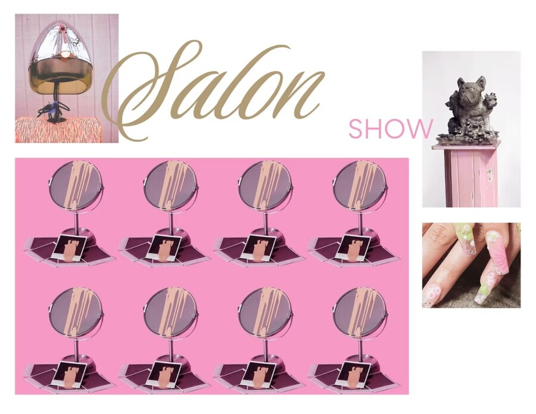

Salon Show
Salon Show
March 14 – 31, 2026
Works by Nora Benjamin, Chris Cosnowski, Alli Davis, Annika Ingrid, Jose Jimenez, Samantha Jones, Kai Offett, Sadie Racky, Kimberly Rodey, Gretchen Schreiber, Brian Selke, Anna Showers-Cruser (ASC), Reina Sundara, Kayla Williams, Curated by Lauren Iacoponi
Salon Show explores the salon and tattoo studio as sites of artistry, ritual, and transformation. These spaces serve as community anchors, creative incubators, and archives of self-expression. Centering nail art, hair design, tattoo culture, and custom grillz, the exhibition reframes beauty practices as forms of contemporary art and underscores the labor, intimacy, and innovation of these art forms. It is through the skill and precision of nail technicians, hair stylist, tattoo artists and jewelry artists that identity is painted, styled, inked and forged.
Beyond the styling chair and tattoo station, spas and beauty salons are also integral to cosmetic and aesthetic art forms and are explored in this exhibition. These environments are spaces where touch, scent, and atmosphere are intentionally cultivated. In spas, the alchemy of handmade soaps and skincare carries transformative potential, while in beauty salons makeup artists collaborate with clients to enhance identity and craft distinctive visual narratives.
Opening Reception
Saturday, March 14, 5 – 8 pm
Gallery Hours